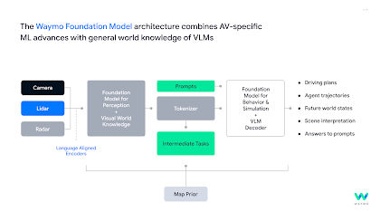

Waymoの根本的な目標は「世界で最も信頼されるドライバーになること」ですが、この目標を達成するには複雑なAIおよび機械学習の課題を解決する必要があります。同社は15年以上にわたり、通勤から医療機関への移動まで、様々なシナリオで乗客を安全に輸送するための信頼性の高いシステムの構築に取り組んできました。
中核的な技術的課題は、実世界の条件下で確実に動作する自律エージェントを開発することです。これには、混雑した交通パターンのナビゲーション、他の道路利用者の行動予測、そして乱暴な運転から突然の天候変化に至る予測不可能なシナリオへの対応が含まれます。
Srikanth Thirumalai（エンジニアリング担当VP、車載）：「私たちが解決しようとしている問題は、実世界をナビゲートできる自律エージェントを構築する方法です。」
Waymoが取り組む課題が特に魅力的で難しいのは、実世界の条件下で確実に動作するモデルを構築する必要があるためです。LiDAR、レーダー、カメラ、オーディオレシーバーを含む包括的なセンサーアレイを使用して高度なAI技術を展開しています。これらのシステムにより、リアルタイムの知覚、行動予測、および経路計画が実現されます。
Chen Wu（知覚担当ヘッド）：「Waymoは、これまでに作られたことのない製品を実現するために、最も先進的な最新技術を適用するユニークな機会を提供しています。」
Waymoは世界で最も高度なAIおよびML技術を展開しており、最先端のリサーチインフラと計算能力によって支えられています。LLM（大規模言語モデル）およびVLM（視覚言語モデル）の進歩を活かし、Waymo Driverの能力を押し広げています。

これらのモデルは、複雑な交通状況の解釈から予期しない障害物への対応まで、Waymo Driverの能力を大幅に強化しています。
Drago Anguelov（研究担当ヘッド）：「AVの領域のアイデアと生成AIのイノベーションを融合させたWaymo Foundation Modelを構築する機会があります。このFoundation Modelは、自律走行特有のML技術と、VLMが持つ汎用的な世界知識の推論能力を組み合わせたものになるでしょう。」
運用規模も重要な焦点です。Waymoの実世界AIシステムは現在、多様な環境で毎週数十万人のライダーにサービスを提供しています。走行する自律マイルのひとつひとつが、安全基準を維持しながらモデル性能を強化する学習機会を提供しています。
自律マイルを重ねるたびに、AIモデルはより多くを学習し改善を続け、各ドライブをより安全で効率的なものにします。
WaymoにとってAIにおける最も興味深い仕事はまだ始まったばかりです。Waymo Driverの規模を拡大し続けるにあたって、自律走行、ロボティクス、および関連分野に関心を持つ専門家にとって、多くの重要なイノベーションの機会が残されています。